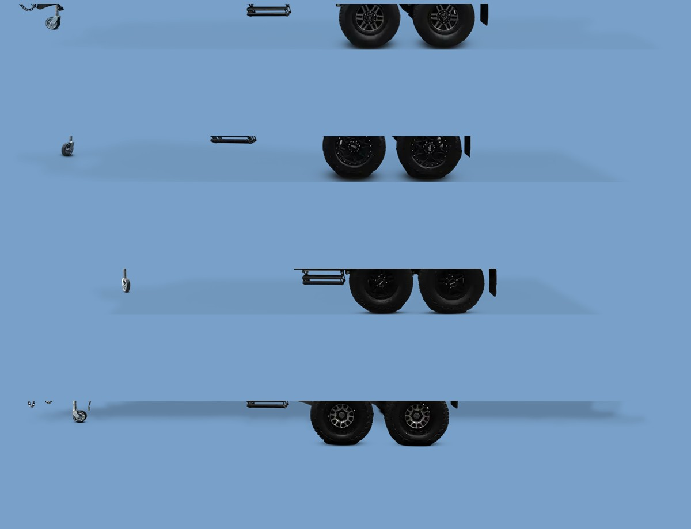
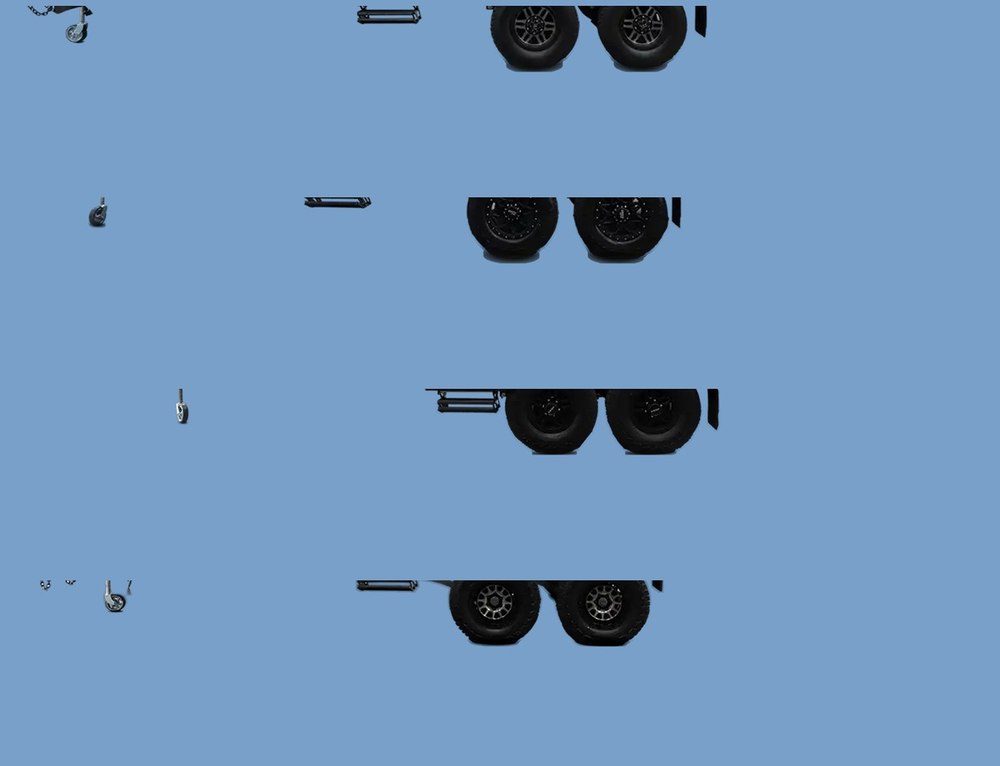
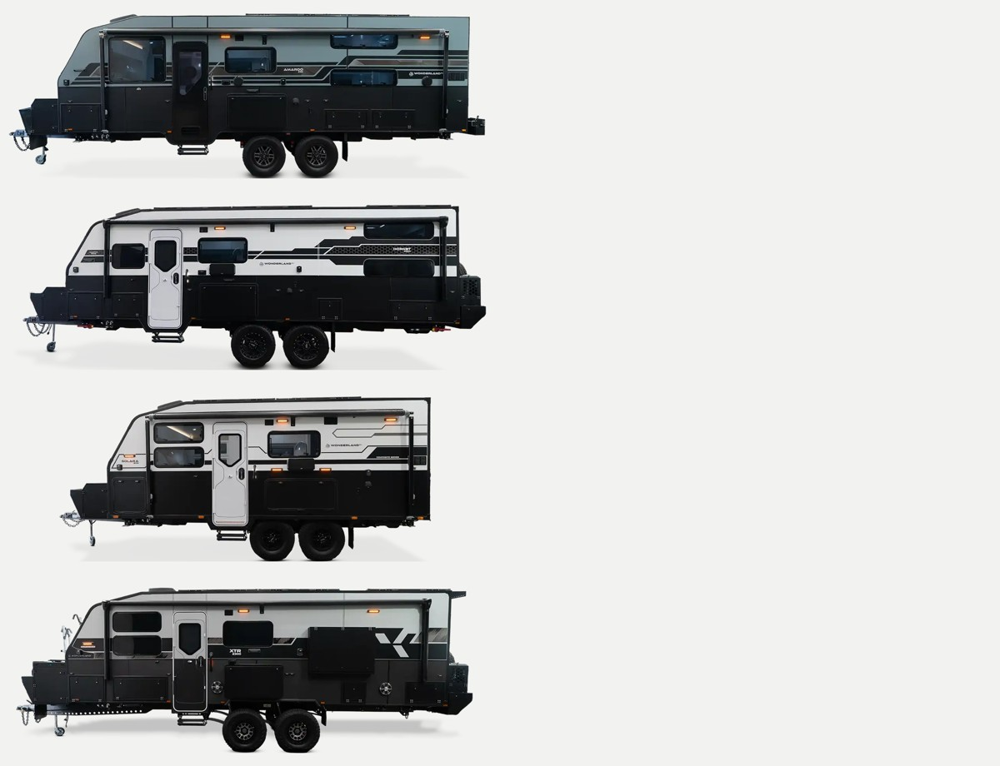
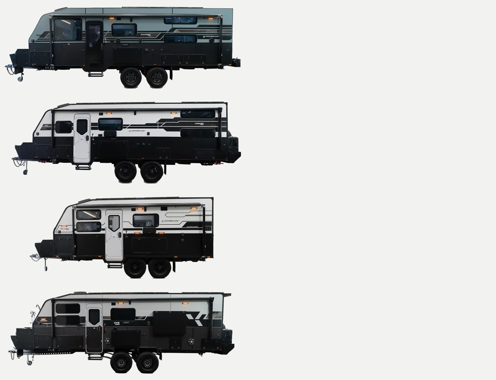
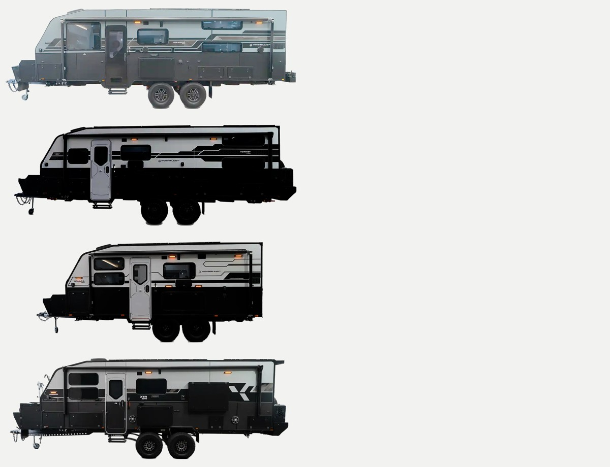

Each one carried a pale haze across the full width at chassis height — the backdrop's floor, surviving as semi-transparent pixels beside the tyres rather than below them. 195,000 to 268,000 pixels per image, different in each. Shown on blue so it is visible; on the page it reads as a grey smudge.





No Gordita Light exists in the licensed set — Regular, Medium and Bold are all there is, and a synthesised light weight would not be a brand font. So the choice is Regular 400 against Medium 500, italics off in both. Switch below.
Ready to step off the
beaten path and
explore in style?
Embark on exceptional
adventures with loved
ones and create
memories that will
last a lifetime.”
Rewritten as log-lines — what the video is about, rather than an account of what happens in it.
now The Solara 2006 took the inaugural Judges’ Choice Award at Caravan World’s Caravan of the Year 2026 — the category for the one van the panel would take home themselves. Twenty foot six: queen bed up front, split ensuite at the back, club lounge for four between.
log-line What makes a judging panel pick one van, out of a whole field, as the one they would take home themselves.
now Kevin takes you past the chassis and into the bones of the van — CNC-cut panels that interlock, furniture rebated before it is screwed and glued, a PUR glue line that holds in top-end heat.
log-line Two caravans can sit side by side on a showroom floor, look the same and cost thousands apart. This is where that money goes.
now Ana walks the couples layout end to end: the rear club lounge, the bed, the kitchen storage and the full shower ensuite.
log-line What a caravan looks like when it is built for two people to live in it rather than just sleep in it.
now The 21′7″ quad-bunk layout rebuilt as three. Ana, who has a fourteen-year-old of her own, explains why a teenager needs the wider single bunk.
log-line Why three bunks beat four the moment a child turns twelve, and what changes when you stop counting beds and start measuring them.
now The XTR 1906, second place for Best Couples Caravan at Caravan of the Year 2024. An EcoFlow 48-volt system and 170 litres of fresh water.
log-line How much power and water it takes to stay out for weeks instead of nights — and what carrying it costs you in space.
now The XTR 2211 took Best Overall Caravan, Best Family Caravan and Best Innovation at Caravan of the Year 2024. A 48-volt Arizon-Victron system, 1600W of solar, 10kWh of lithium and 900kg of payload.
log-line Three Caravan of the Year titles in one night — best overall, best family, best innovation. The van and the spec that took them.